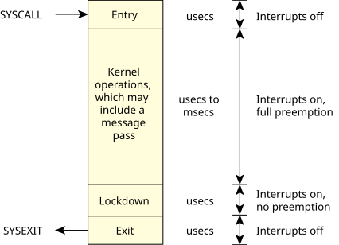

The microkernel has kernel calls to support the following:
The entire OS is built upon these calls. The OS is fully preemptible, even while passing messages between processes; it resumes the message pass where it left off before preemption.
The minimal complexity of the microkernel helps place an upper bound on the longest nonpreemptible code path through the kernel, while the small code size makes addressing complex multiprocessor issues a tractable problem. Services were chosen for inclusion in the microkernel on the basis of having a short execution path. Operations requiring significant work (e.g., process loading) were assigned to external processes/threads, where the effort to enter the context of that thread would be insignificant compared to the work done within the thread.
Rigorous application of this rule to dividing the
functionality between the kernel and external processes
destroys the myth that a microkernel OS must incur higher
runtime overhead than a monolithic kernel OS. The work
done between context switches (implicit in a message pass)
exceeds the very quick context-switch times
that result from the simplified kernel.
Thus, the time spent performing context
switches becomes lost in the noise
of the work
done to service the requests communicated by the message
passing between the OS processes.

Interrupts are disabled, or preemption is held off, for only very brief intervals (typically in the order of hundreds of nanoseconds).